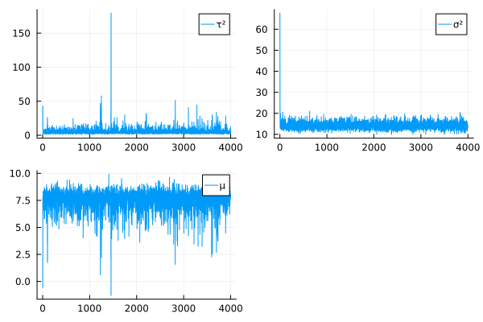

Department of Electrical and Computer Engineering, Texas A&M University
Published
January 20, 2023
12.1 Description
Course: STAT638, 2022 Fall
Read Chapter 8 in the Hoff book. Then do the following exercises in Hoff: 8.1 and 8.3.
Please note some typos in 8.1: All \(\theta_i\)’s should be \(\theta_j\)’s.
For 8.1(c), you may find the law of total (co-)variance useful. In addition, remember that all of these laws also hold for conditional distributions (e.g., when conditioning on additional quantities such as \(\mu\) and \(\tau^2\) in all terms on the left- and right-hand side of the equation).
Activating project at `~/Documents/GitHub/STAT638_Applied-Bayes-Methods/hw/hw8`
Random.TaskLocalRNG()
12.2.2 Version
Pkg.status()VERSION
Status `~/Documents/GitHub/STAT638_Applied-Bayes-Methods/hw/hw8/Project.toml`
⌃ [a93c6f00] DataFrames v1.4.2
⌃ [31c24e10] Distributions v0.25.76
⌃ [be115224] MCMCDiagnosticTools v0.1.4
⌃ [91a5bcdd] Plots v1.35.5
[2913bbd2] StatsBase v0.33.21
[f3b207a7] StatsPlots v0.15.4
⌃ [fce5fe82] Turing v0.21.12
[8bb1440f] DelimitedFiles
[10745b16] Statistics
Info Packages marked with ⌃ have new versions available and may be upgradable.
v"1.8.2"
12.2.3 Problem 8.1
Components of variance: Consider the hierarchical model where
\[y_{1,j}, \dots, y_{n_j, j} |\theta_j, \sigma^2 \sim i.i.d. \text{normal}(\theta_j, \sigma^2)\] For this problem, we will eventually compute the following:
\(Var[y_{i,j}|\mu, \tau^2]\), \(Var[\bar{y}_{\cdot,j}|\mu, \tau^2]\), \(Cov[y_{i_1,j}, y_{i_2, j}|\mu, \tau^2]\) First, lets use our intuition to guess at the answers:
12.2.4 (a)
Which do you think is bigger, \(Var[y_{i,j}|\theta_i, \sigma^2]\) or \(Var[y_{i,j}|\mu, \tau^2]\)? To guide your intuition, you can interpret the first as the variability of the \(Y\)’s when sampling from a fixed group, and the second as the variability in first sampling a group, then sampling a unit from within the group.
\(Var[y_{i,j} | \mu, \tau^2]\) because \(\theta_j\) is uncertain and the between-group varibability create additional uncertainty.
12.2.5 (b)
Do you think \(Cov[y_{i_1,j}, y_{i_2, j}|\theta_j, \sigma^2]\) is negative, positive, or zero? Answer the same for \(Cov[y_{i_1,j}, y_{i_2, j}|\mu, \tau^2]\). You may want to think about what \(y_{i_2, j}\) tells you about \(y_{i_1, j}\) if \(\theta_j\) is known, and what it tells you when \(\theta_j\) is unknown.
\(Cov[y_{i_1,j}, y_{i_2, j}|\theta_j, \sigma^2]\)
Because \(y_{i_1, j}\) and \(y_{i_2, j}\) is i.i.d. sampled, I expect \(Cov[y_{i_1,j}, y_{i_2, j}|\theta_j, \sigma^2]\) to be zero.
\(Cov[y_{i_1,j}, y_{i_2, j}|\mu, \tau^2]\)
\(y_{1,j}\) does tell information about \(y_{2,j}\). The covariance \(Cov[y_{i_1,j}, y_{i_2, j}|\mu, \tau^2]\) is likely to be positive because values from same \(\theta_j\) tend to be close together.
12.2.6 (c)
Now compute each of the six quantities above and compare to your answers in (a) and (b). 2
Now assume we have a prior \(p(\mu)\) for \(\mu\). Using Bayes’ rule, show that \[p(\mu|\theta_1, \dots, \theta_m, \sigma^2, \tau^2, y_1, \dots, y_m) = p(\mu|\theta_1, \dots, \theta_m, \tau^2)\] Interpret in words what this means.
where \(p(\sigma^2, y_1, \dots, y_m | \mu, \theta_1, \dots, \theta_m, \tau^2) = p(\sigma^2, y_1, \dots, y_m | \theta_1, \dots, \theta_m, \tau^2)\) because knowing \(\mu\) doesn’t provide more information when \(\theta_1, \dots, \theta_m\) are known.
12.3 Problem 8.3
Herarchical modeling: The files school1.dat through school8.dat give weekly hours spent on homework for students sampled from eight different schools. Obtain posterior distributions for the true means for the eight different schools using a herarchical normal model with the following prior parameters: \[\mu_0 = 7, \gamma^{2}_{0} = 5, \tau^{2}_{0}=10, \eta_0 = 2, \sigma^{2}_{0} = 15, \nu_0 = 2\]
dsch =Dict()nsch =8for i in1:nsch dsch[i] =readdlm("data/school$i.dat")end
12.3.1 (a)
Run a Gibbs sampling algorithm to approximate the posterior distribution of \(\{\theta, \sigma^2, \mu, \tau^2\}\). Assess the convergence of the Markov chain, and find the effective sample size for \(\{\sigma^2, \mu, \tau^2\}\). Run the chain long enough so that the effective sample sizes are all above \(1000\).
# Priorμ0=7.γ0² =5.τ0² =10.η0=2.σ0² =15.ν0=2.# Datans = [ length(dsch[i]) for i in1:nsch]n =sum(ns)m =length(dsch)ȳs = [mean(dsch[i]) for i in1:nsch]s²s = [ (ns[i] -1)^-1*sum( (dsch[i] .- ȳs[i]).^2) for i in1:nsch]# posteriorfunctionτ²_pos(m, η0, θv, μ, τ0²) ths² =sum([ (θ- μ)^2 for θ in θv]) α = (m + η0)*0.5 β = (ths² + η0*τ0²)/2returnInverseGamma(α, β)endfunctionσ²_pos(n, ν0, σ0², ns, s²s, ȳs, θs) α = (n+ν0)/2 β =( sum((ns .-1) .* s²s .+ ns .* (ȳs .- θs).^2) + ν0*σ0²)/2returnInverseGamma(α, β)endfunctionμ_pos(m, τ², θs, γ0², μ0) γm² = (m/τ² +1/γ0²)^-1 θ̄ =mean(θs) a =γm²*(m*θ̄/τ² + μ0/τ²)returnNormal(a, γm²)endfunctionθ_pos(τ², ȳ, n, σ², μ) τ̃² = (n/σ² +1/τ²)^-1 a =τ̃²*(n*ȳ/σ² + μ/τ²)returnNormal(a, τ̃²)end"""Effective Sample Size"""functioness(v) n =length(v) c =sum(autocov(v, collect(1:n-1)))return n/(1+2*c)end# Samplingsmp =4000τ²s =zeros(smp)σ²s =zeros(smp)μs =zeros(smp)θs =zeros(smp, m)σ²s[1] =rand(InverseGamma(ν0/2, ν0*σ0²/2))τ²s[1] =rand(InverseGamma(η0/2, η0*τ0²/2))μs[1] =rand(Normal(μ0, γ0²))#θs[1,:] = [rand(θ_pos(τ²s[1], ȳs[i], ns[i], σ²s[1], μs[1])) for i in 1:m]θs[1,:] =rand(Normal(μs[1], τ²s[1]), m)for s in2:smp σ²s[s] =rand(σ²_pos(n, ν0, σ0², ns, s²s, ȳs, θs[s-1,:])) τ²s[s] =rand(τ²_pos(m, η0, θs[s-1,:], μs[s-1], τ0²)) θs[s,:] = [rand(θ_pos(τ²s[s-1], ȳs[i], ns[i], σ²s[s-1], μs[s-1])) for i in1:m] μs[s] =rand(μ_pos(m, τ²s[s-1], θs[s-1,:], γ0², μ0))end
for i in [τ²s, σ²s, μs, θs]plot(i)endp1 =plot(τ²s[2:end], label="τ²")p2 =plot(σ²s[2:end], label="σ²")p3 =plot(μs[2:end], label="μ")plot(p1, p2, p3)

Effetive Sample Size
\(\tau^2\)
ess(τ²s)
1523.525
\(\sigma^2\)
ess(σ²s)
1234.234
\(\mu\)
ess(μs)
1045.242
12.3.2 (b)
Compute posterior means and \(95\%\) confidence regions for \(\{\sigma^2, \mu, \tau^2\}\). Also, compare the posterior densities to the prior densities, and discuss what was learned from the data.
Estimations of \(\mu\) and \(\tau\) are similar in prior and posterior. However, \(\sigma^2\) is different.
12.3.3 (c)
Plot the posterior density of \(R=\frac{\tau^2}{\sigma^2 + \tau^2}\) and compare it to a plot of the prior density of \(R\). Describe the evidence for between-school variation.
\(R\) represents the quantity of vairance in between-group. The prior is not certain about the specific quantity, but after applying posterior inference. The posterior probability of \(R\) is peaked and more cetain about the value is around \(0.3\).
12.3.4 (d)
Obtain the posterior probability that \(\theta_7\) is smaller than \(\theta_6\), as well as the posterior probability that \(\theta_7\) is smaller than of all the \(\theta\)’s.
p(\(\theta_7\) is smaller than \(\theta_6\))
mean(θs[:,7] .< θs[:,6])
0.53075
p(\(\theta_7\) is smaller than of all the \(\theta\)’s)
res =zeros(size(θs)[1])for i in1:size(θs)[1]ifargmin(θs[i,:]) ==7 res[i] =1endendmean(res)
0.339
12.3.5 (e)
Plot the sample averages \(\bar{y}_1, \dots, \bar{y}_8\) against the posterior expectations of \(\theta_1, \dots, \theta_8\), and describe the relationship. Also compute the sample mean of all observations and compare it to the posterior mean of \(\mu\).
---title: "Homework 8"author: - name: Shao-Ting Chiu (UIN:433002162) url: stchiu@email.tamu.edu affiliation: Department of Electrical and Computer Engineering, Texas A\&M Universitydate: todaybibliography: ../ref.bibformat: html: table-of-contents: true keep-ipynb: true pdf: table-of-contents: true keep-tex: true include-in-header: | \usepackage{fontspec} \setmainfont{DejaVu Sans} \setmonofont{DejaVu Sans Mono}jupyter: julia-1.8execute: echo: true freeze: auto---## Description- Course: STAT638, 2022 Fall> Read Chapter 8 in the Hoff book. Then do the following exercises in Hoff: 8.1 and 8.3.> > Please note some typos in 8.1: All $\theta_i$'s should be $\theta_j$'s.> > For 8.1(c), you may find [the law of total (co-)variance](https://en.wikipedia.org/wiki/Law_of_total_covariance) useful. In addition, remember that all of these laws also hold for conditional distributions (e.g., when conditioning on additional quantities such as $\mu$ and $\tau^2$ in all terms on the left- and right-hand side of the equation).## Computational Enviromnent Setup[^ques]### Third-party libraries``` {julia}using PkgPkg.activate("hw8")using Distributionsusing DataFramesusing Turingusing Plotsusing DelimitedFilesusing LinearAlgebrausing Statisticsusing Turingusing StatsBaseusing StatsPlotsimport RandomRandom.seed!(2022)```### Version``` {julia}Pkg.status()VERSION```[^ques]: I use special character in Julia code. Unfortunately, those are not displayed in PDF version.---### Problem 8.1> Components of variance: Consider the hierarchical model where> > $$\theta_1, \dots, \theta_m | \mu, \tau^2 \sim i.i.d. \text{normal}(\mu, \tau^2)$$> > $$y_{1,j}, \dots, y_{n_j, j} |\theta_j, \sigma^2 \sim i.i.d. \text{normal}(\theta_j, \sigma^2)$$> For this problem, we will eventually compute the following:>> - $Var[y_{i,j}|\theta_i, \sigma^2]$,$Var[\bar{y}_{\cdot,j}|\theta_i, \sigma^2]$,$Cov[y_{i_1,j}, y_{i_2, j}|\theta_j, \sigma^2]$> - $Var[y_{i,j}|\mu, \tau^2]$,$Var[\bar{y}_{\cdot,j}|\mu, \tau^2]$,$Cov[y_{i_1,j}, y_{i_2, j}|\mu, \tau^2]$> First, lets use our intuition to guess at the answers:### (a)> Which do you think is bigger, $Var[y_{i,j}|\theta_i, \sigma^2]$ or $Var[y_{i,j}|\mu, \tau^2]$? To guide your intuition, you can interpret the first as the variability of the $Y$'s when sampling from a fixed group, and the second as the variability in first sampling a group, then sampling a unit from within the group.- $Var[y_{i,j} | \mu, \tau^2]$ because $\theta_j$ is uncertain and the between-group varibability create additional uncertainty.### (b)> Do you think $Cov[y_{i_1,j}, y_{i_2, j}|\theta_j, \sigma^2]$ is negative, positive, or zero? Answer the same for $Cov[y_{i_1,j}, y_{i_2, j}|\mu, \tau^2]$. You may want to think about what $y_{i_2, j}$ tells you about $y_{i_1, j}$ if $\theta_j$ is known, and what it tells you when $\theta_j$ is unknown.$Cov[y_{i_1,j}, y_{i_2, j}|\theta_j, \sigma^2]$Because $y_{i_1, j}$ and $y_{i_2, j}$ is i.i.d. sampled, I expect $Cov[y_{i_1,j}, y_{i_2, j}|\theta_j, \sigma^2]$ to be zero.$Cov[y_{i_1,j}, y_{i_2, j}|\mu, \tau^2]$$y_{1,j}$ does tell information about $y_{2,j}$. The covariance $Cov[y_{i_1,j}, y_{i_2, j}|\mu, \tau^2]$ is likely to be positive because values from same $\theta_j$ tend to be close together.### (c)> Now compute each of the six quantities above and compare to your answers in (a) and (b). [^tot-var]\begin{align} Var[y_{i,j}|\theta_i, \sigma^2]% &= \sigma^2\end{align}\begin{align} Var[\bar{y}_{\cdot,j}|\theta_i, \sigma^2]% &= Var[\sum_{i'=1}^{n_j}y_{i',j}/n |\theta_i, \sigma^2]\\ &= \frac{1}{n^2}Var[\sum_{i'=1}^{n_j}y_{i',j} |\theta_i, \sigma^2]\\ &= \frac{1}{n^2} \sum_{i'=1}^{n_j} Var[y_{i',j} |\theta_i, \sigma^2]\\ &= \frac{1}{n} Var[y_{i',j} |\theta_i, \sigma^2]\\ &= \frac{\sigma^2}{n} \end{align}\begin{align} Cov[y_{i_1,j}, y_{i_2, j}|\theta_j, \sigma^2]% &= E[y_{i_1, j} y_{i_2, j}] - E[y_{i_1, j}]E[y_{i_2, j}]\\ &= E[y_{i_1, j}]E[y_{i_2, j}] - E[y_{i_1, j}]E[y_{i_2, j}]\\ &= 0\end{align}\begin{align} Var[y_{i,j}|\mu, \tau^2]% &= E(Var[y_{i,j}|\mu, \tau^2, \theta, \sigma^2]|\mu, \tau^2) + Var(E[y_{i,j}|\mu, \tau^2, \theta, \sigma^2]|\mu, \tau^2)\\ &= E(\sigma^2 | \mu, \tau^2) + Var(\theta | \mu, \tau^2)\\ &= \sigma^2 + \tau^2\end{align}\begin{align} Var[\bar{y}_{\cdot,j}|\mu, \tau^2]% &= E(Var[\bar{y}_{\cdot,j}|\mu, \tau^2, \theta, \sigma^2]|\mu, \tau^2) + Var(E[\bar{y}_{\cdot,j}|\mu, \tau^2, \theta, \sigma^2]|\mu, \tau^2)\\ &= E(\frac{\sigma^2}{n}|\mu,\tau^2) + Var(\theta | \mu, \tau^2)\\ &= \frac{\sigma^2}{n} + \tau^2\end{align}\begin{align} Cov[y_{i_1, j}, y_{i_2, j}|\mu, \tau^2]% &= E(Cov[y_{i_1, j}, y_{i_2, j} | \theta, \sigma^2, \mu, \tau^2]| \mu, \tau^2) \\ &+ Cov(E[y_{i_1, j} | \theta, \sigma^2, \mu, \tau^2], E[y_{i_2, j} | \theta, \sigma^2, \mu, \tau^2] | \mu, \tau^2)\\ &= 0 + Cov(\theta, \theta | \mu, \tau^2)\\ &= E[\theta^2|\mu, \tau^2] - E[\theta|\mu, \tau^2]^2\\ &= Var(\theta |\mu, \tau^2)\\ &= \tau^2\end{align}[^tot-var]: $Var(Y) = E[Var(Y|X)] + Var(E[Y|X])$### (d)> Now assume we have a prior $p(\mu)$ for $\mu$. Using Bayes' rule, show that > $$p(\mu|\theta_1, \dots, \theta_m, \sigma^2, \tau^2, y_1, \dots, y_m) = p(\mu|\theta_1, \dots, \theta_m, \tau^2)$$> Interpret in words what this means.\begin{align}p(\mu|\theta_1, \dots, \theta_m, \sigma^2, \tau^2, y_1, \dots, y_m)%&= \frac{p(\sigma^2, y_1, \dots, y_m | \mu, \theta_1, \dots, \theta_m, \tau^2) p(\mu |\theta_1, \dots, \theta_m, \tau^2)}{ p(\sigma^2, y_1, \dots, y_m | \theta_1, \dots, \theta_m, \tau^2) }\\ &= p(\mu|\theta_1, \dots, \theta_m, \tau^2)\end{align}where $p(\sigma^2, y_1, \dots, y_m | \mu, \theta_1, \dots, \theta_m, \tau^2) = p(\sigma^2, y_1, \dots, y_m | \theta_1, \dots, \theta_m, \tau^2)$ because knowing $\mu$ doesn't provide more information when $\theta_1, \dots, \theta_m$ are known.## Problem 8.3> Herarchical modeling: The files [`school1.dat`](data/school1.dat) through [`school8.dat`](data/school8.dat) give weekly hours spent on homework for students sampled from eight different schools. Obtain posterior distributions for the true means for the eight different schools using a herarchical normal model with the following prior parameters:> $$\mu_0 = 7, \gamma^{2}_{0} = 5, \tau^{2}_{0}=10, \eta_0 = 2, \sigma^{2}_{0} = 15, \nu_0 = 2$$``` {julia}dsch = Dict()nsch = 8for i in 1:nsch dsch[i] = readdlm("data/school$i.dat")end```### (a)> Run a Gibbs sampling algorithm to approximate the posterior distribution of $\{\theta, \sigma^2, \mu, \tau^2\}$. Assess the convergence of the Markov chain, and find the effective sample size for $\{\sigma^2, \mu, \tau^2\}$. Run the chain long enough so that the effective sample sizes are all above $1000$.``` {julia}# Priorμ0 = 7.γ0² = 5.τ0² = 10.η0 = 2.σ0² = 15.ν0 = 2.# Datans = [ length(dsch[i]) for i in 1:nsch]n = sum(ns)m = length(dsch)ȳs = [mean(dsch[i]) for i in 1:nsch]s²s = [ (ns[i] - 1)^-1* sum( (dsch[i] .- ȳs[i]).^2) for i in 1:nsch]# posteriorfunction τ²_pos(m, η0, θv, μ, τ0²) ths² = sum([ (θ- μ)^2for θ in θv]) α = (m + η0)* 0.5 β = (ths² + η0*τ0²)/2return InverseGamma(α, β)endfunction σ²_pos(n, ν0, σ0², ns, s²s, ȳs, θs) α = (n+ν0)/2 β =( sum((ns .- 1) .* s²s .+ ns .*(ȳs .- θs).^2)+ ν0*σ0²)/2 return InverseGamma(α, β)endfunction μ_pos(m, τ², θs, γ0², μ0) γm² = (m/τ² + 1/γ0²)^-1 θ̄ = mean(θs) a = γm²*(m*θ̄/τ² + μ0/τ²) return Normal(a, γm²)endfunction θ_pos(τ², ȳ, n, σ², μ) τ̃² = (n/σ² + 1/τ²)^-1 a = τ̃²*(n*ȳ/σ² + μ/τ²)return Normal(a, τ̃²)end"""Effective Sample Size"""function ess(v) n = length(v) c = sum(autocov(v, collect(1:n-1)))return n/(1+2*c)end# Samplingsmp = 4000τ²s = zeros(smp)σ²s = zeros(smp)μs = zeros(smp)θs = zeros(smp, m)σ²s[1] = rand(InverseGamma(ν0/2, ν0*σ0²/2))τ²s[1] = rand(InverseGamma(η0 /2, η0 *τ0²/2))μs[1] = rand(Normal(μ0, γ0²))#θs[1,:] = [rand(θ_pos(τ²s[1], ȳs[i], ns[i], σ²s[1], μs[1])) for i in 1:m]θs[1,:] = rand(Normal(μs[1], τ²s[1]), m)for s in 2:smp σ²s[s] = rand(σ²_pos(n, ν0, σ0², ns, s²s, ȳs, θs[s-1,:])) τ²s[s] = rand(τ²_pos(m, η0, θs[s-1,:], μs[s-1], τ0²)) θs[s,:] = [rand(θ_pos(τ²s[s-1], ȳs[i], ns[i], σ²s[s-1], μs[s-1])) for i in 1:m] μs[s] = rand(μ_pos(m, τ²s[s-1], θs[s-1,:], γ0², μ0))end`````` {julia}for i in [τ²s, σ²s, μs, θs] plot(i)endp1 = plot(τ²s[2:end], label="τ²")p2 = plot(σ²s[2:end], label="σ²")p3 = plot(μs[2:end], label="μ")plot(p1, p2, p3)```- Effetive Sample Size-$\tau^2$``` juliaess(τ²s)``````1523.525```- $\sigma^2$``` juliaess(σ²s)``````1234.234```- $\mu$``` juliaess(μs)``````1045.242```### (b)> Compute posterior means and$95\%$ confidence regions for$\{\sigma^2, \mu, \tau^2\}$. Also, compare the posterior densities to the prior densities, and discuss what was learned from the data.- $\sigma^2$``` {julia}quantile(σ²s, [0.025, 0.5, 0.975])```- $\mu$``` {julia}quantile(μs, [0.025, 0.5, 0.975])```- $\tau$``` {julia}quantile(τ²s, [0.025, 0.5, 0.975])`````` {julia}pu = density(μs, label="μₙ")pt = density(σ²s,label="σ²ₙ")ps = density(τ²s, label="τ²ₙ")plot!(pu, Normal(μ0 , γ0²), label= "μ0")plot!(pt, InverseGamma(η0 /2, η0 *τ0²/2), label= "σ²0")plot!(ps, InverseGamma(ν0/2, ν0*σ0²/2), label= "τ²0")xlims!(pt, 0,30)xlims!(ps, 0,30)plot(pu, pt, ps)```Estimations of $\mu$ and$\tau$ are similar in prior and posterior. However, $\sigma^2$ is different. ### (c)> Plot the posterior density of $R=\frac{\tau^2}{\sigma^2 + \tau^2}$ and compare it to a plot of the prior density of $R$. Describe the evidence for between-school variation.``` {julia}σ²_prs = rand(InverseGamma(ν0/2, ν0*σ0²/2), 1000)τ²_prs = rand(InverseGamma(η0 /2, η0 *τ0²/2), 1000)R_prs = τ²_prs ./ (σ²_prs .+ τ²_prs)R_pos = τ²s ./ (σ²s .+ τ²s)pr = density(R_prs, label="R Prior", xlabel="R", ylabel="density")density!(pr, R_pos, label="R posterior")```$R$ represents the quantity of vairance in between-group. The prior is not certain about the specific quantity, but after applying posterior inference. The posterior probability of $R$ is peaked and more cetain about the value is around $0.3$.### (d)> Obtain the posterior probability that $\theta_7$ is smaller than $\theta_6$, as well as the posterior probability that $\theta_7$ is smaller than of all the $\theta$'s.- p($\theta_7$ is smaller than $\theta_6$)``` {julia}mean(θs[:,7] .< θs[:,6])```- p($\theta_7$ is smaller than of all the $\theta$'s)``` {julia}res = zeros(size(θs)[1])for i in 1 : size(θs)[1] if argmin(θs[i,:]) == 7 res[i] = 1 endendmean(res)```### (e)> Plot the sample averages $\bar{y}_1, \dots, \bar{y}_8$ against the posterior expectations of $\theta_1, \dots, \theta_8$,and describe the relationship. Also compute the sample mean of all observations and compare it to the posterior mean of $\mu$.``` {julia}psmp = scatter(ȳs, mean(θs, dims = 1)[1,:], xlabel="Sample Average", ylabel= "Posterior Expectation")hline!(psmp, [mean(μs)], label="posterior mean (μn)")hline!(psmp, [sum(ȳs .* ns)/n], label="Pooled sample mean (μ)" )```